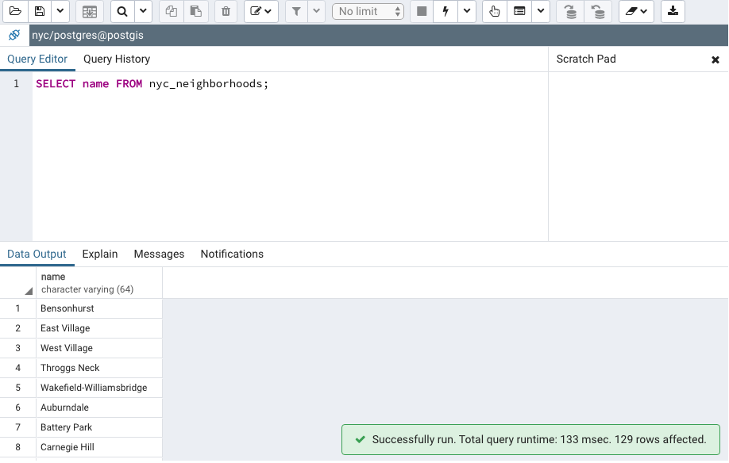

Simple SQL¶
SQL, or “Structured Query Language”, is a means of asking questions of, and updating data in, relational databases. You have already seen SQL when we created our first database. Recall:
SELECT postgis_full_version();
But that was a question about the database. Now that we’ve loaded data into our database, let’s use SQL to ask questions of the data! For example,
“What are the names of all the neighborhoods in New York City?”
Open up the SQL query window in pgAdmin by clicking the SQL button

then enter the following query in to the query window
SELECT name FROM nyc_neighborhoods;
and click the Execute Query button (again the thunder, but under the query editor side).
The query will run for a few (milli)seconds and return the 129 results. (This info will disappear after a few seconds on the bottom righ of the results).
But what exactly happened here? To understand, let’s begin with the four “verbs” of SQL,
SELECT, returns rows in response to a queryINSERT, adds new rows to a tableUPDATE, alters existing rows in a tableDELETE, removes rows from a table
We will be working almost exclusively with SELECT in order to ask questions of tables using spatial functions.
SELECT queries¶
A select query is generally of the form:
SELECT some_columns FROM some_data_source WHERE some_condition;
Note
For a synopsis of all SELECT parameters, see the PostgresSQL documentation.
The some_columns are either column names or functions of column values. The some_data_source is either a single table, or a composite table created by joining two tables on a key or condition. The some_condition is a filter that restricts the number of rows to be returned.
“What are the names of all the neighborhoods in Brooklyn?”
We return to our nyc_neighborhoods table with a filter in hand. The table contains all the neighborhoods in New York, but we only want the ones in Brooklyn.
SELECT name
FROM nyc_neighborhoods
WHERE boroname = 'Brooklyn';
The query will run for even fewer (milli)seconds and return the 23 results.
Sometimes we will need to apply a function to the results of our query. For example,
“What is the number of letters in the names of all the neighborhoods in Brooklyn?”
Fortunately, PostgreSQL has a string length function, char_length(string).
SELECT char_length(name)
FROM nyc_neighborhoods
WHERE boroname = 'Brooklyn';
Often, we are less interested in the individual rows than in a statistic that applies to all of them. So knowing the lengths of the neighborhood names might be less interesting than knowing the average length of the names. Functions that take in multiple rows and return a single result are called “aggregate” functions.
PostgreSQL has a series of built-in aggregate functions, including the general purpose avg() for average values and stddev() for standard deviations.
“What is the average number of letters and standard deviation of number of letters in the names of all the neighborhoods in Brooklyn?”
SELECT avg(char_length(name)), stddev(char_length(name))
FROM nyc_neighborhoods
WHERE boroname = 'Brooklyn';
avg | stddev
---------------------+--------------------
11.7391304347826087 | 3.9105613559407395
The aggregate functions in our last example were applied to every row in the result set. What if we want the summaries to be carried out over smaller groups within the overall result set? For that we add a GROUP BY clause. Aggregate functions often need an added GROUP BY statement to group the result-set by one or more columns.
“What is the average number of letters in the names of all the neighborhoods in New York City, reported by borough?”
SELECT boroname, avg(char_length(name)), stddev(char_length(name))
FROM nyc_neighborhoods
GROUP BY boroname;
We include the boroname column in the output result so we can determine which statistic applies to which borough. In an aggregate query, you can only output columns that are either (a) members of the grouping clause or (b) aggregate functions.
boroname | avg | stddev
---------------+---------------------+--------------------
Brooklyn | 11.7391304347826087 | 3.9105613559407395
Manhattan | 11.8214285714285714 | 4.3123729948325257
The Bronx | 12.0416666666666667 | 3.6651017740975152
Queens | 11.6666666666666667 | 5.0057438272815975
Staten Island | 12.2916666666666667 | 5.2043390480959474
Function List¶
avg(expression): PostgreSQL aggregate function that returns the average value of a numeric column.
char_length(string): PostgreSQL string function that returns the number of character in a string.
stddev(expression): PostgreSQL aggregate function that returns the standard deviation of input values.